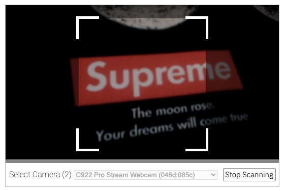
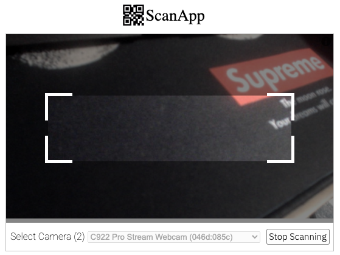

Setting dynamic QR box size in Html5-qrcode
09 Jan 2022 | Authored by Minhazmebjas/html5-qrcode is a fairly used open source library for implementing QR Code or barcode scanner in a web application.

Figure: User interface for Html5-qrcode using Html5QrcodeScanner class
The library provides two approaches for integrating QR code / bar code scanning with any web applications.
- Core library called
Html5Qrcodewhich provide APIs for web developers to build the user interface upon and abstracts camera / permissions / QR code or barcode decoding. - End to end UI for code scanning as well local image based scanning using
Html5QrcodeScannerclass.
One can simply setup a QR code scanning with following lines of code.
<!-- html -->
<div id="reader" width="600px"></div>
<script src="https://unpkg.com/html5-qrcode" type="text/javascript">
// Javascript code.
function onScanSuccess(decodedText, decodedResult) {
// handle the scanned code as you like, for example:
console.log(`Code matched = ${decodedText}`, decodedResult);
}
let config = { fps: 10, qrbox: {width: 250, height: 250} };
let html5QrcodeScanner = new Html5QrcodeScanner(
"reader", config, /* verbose= */ false);
html5QrcodeScanner.render(onScanSuccess);
The qrbox config lets developers define the portion of the viewfinder that will be used for scanning. It’s supported both in Html5Qrcode as well as Html5QrcodeScanner class. Based on this value the library renders a box with shaded regions around it, allowing end-users to compose the scanning device around the QR code or barcodes.
qrbox configuration
Based on the developer documentation you can either pass a dimension of type QrDimensions as value for this config.
/** Defines dimension for QR Code Scanner. */
interface QrDimensions {
width: number;
height: number;
}
So this means for a barcode scanning usecase you can pass a non square configuration like {width: 400, height: 100} to render scanner like this - likely ideal for scanning rectangual barcodes.

Dynamically setting qrbox configuration
With version 2.2.0 onwards the library now also supports passing in a function of type QrDimensionFunction as a value for this configuration.
/**
* A function that takes in the width and height of the video stream
* and returns QrDimensions.
*
* Viewfinder refers to the video showing camera stream.
*/
type QrDimensionFunction =
(viewfinderWidth: number, viewfinderHeight: number) => QrDimensions;
The function takes in the dimensions of the viewfinder (the video stream with camera feed) and is expected to return QrDimensions.
This is great, with this you can now set a custom function to determine the QR box dimensions based on run time properties of the video stream that works across form factors.
Here’s an example:
function onScanSuccess(decodedText, decodedResult) {
// handle the scanned code as you like, for example:
console.log(`Code matched = ${decodedText}`, decodedResult);
}
// Square QR box with edge size = 70% of the smaller edge of the viewfinder.
let qrboxFunction = function(viewfinderWidth, viewfinderHeight) {
let minEdgePercentage = 0.7; // 70%
let minEdgeSize = Math.min(viewfinderWidth, viewfinderHeight);
let qrboxSize = Math.floor(minEdgeSize * minEdgePercentage);
return {
width: qrboxSize,
height: qrboxSize
};
}
let html5QrcodeScanner = new Html5QrcodeScanner(
"reader",
{ fps: 10, qrbox: qrboxFunction },
/* verbose= */ false);
html5QrcodeScanner.render(onScanSuccess);
With this you can set the QR box dimensions to always be 70% of the smaller edge of the video stream so it works on both mobile and PC platforms.